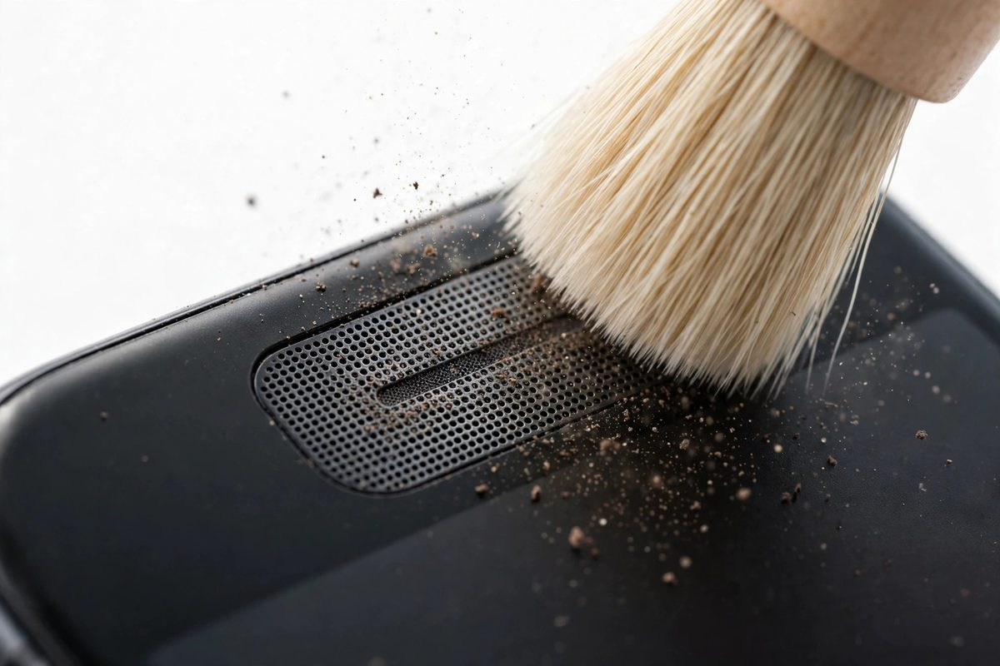

How to Remove Dust from Your Phone Speaker

Your phone goes everywhere with you: pockets, bags, desks, kitchen counters, and dusty rooms. Every one of those places leaves a little dust behind, and the speaker grille is one of the easiest places for it to collect. The grille is a fine mesh with tiny holes, and over weeks and months a thin layer of dust and lint builds up over it. The sound has to push through that layer, so music starts to sound quiet and voices become muffled. The good news is that dust on the grille is one of the easiest speaker problems to fix, and you can usually do it at home in a few minutes with simple, safe tools.
How to Tell If Dust Is the Problem
Before you start cleaning, check that dust is really the cause. The most common sign is a gradual loss of volume and clarity: the speaker used to sound loud and clear, and now it sounds like the phone is speaking from inside a pocket. Look closely at the grille under a bright light. If you can see grey or white dust sitting in the holes, or if the mesh looks clogged rather than clean and dark, dust is very likely part of the problem.
Also rule out simple causes first. Check that the volume is turned up, that no case is blocking the speaker, and that the sound is quiet in every app, not just one. If only one app sounds quiet, that app has its own volume setting, and cleaning will not help.
Safe Tools for Cleaning a Speaker Grille
You do not need specialist equipment. A soft-bristled brush is the best option: a clean, dry, soft toothbrush, a small makeup brush, or a camera lens brush all work well. The bristles need to be soft enough that they will not scratch the mesh or push debris further inside. A roll of sticky tape, or a small piece of adhesive putty, can also lift dust off the surface of the grille.
A speaker cleaner tool that plays cleaning tones is a useful partner to physical cleaning. The vibrations shake loose particles that a brush cannot reach, and the two methods together are more effective than either one alone. Our speaker cleaner tool is free to use and works in your browser without installing anything.
Step-by-Step: Cleaning the Dust Out
Follow these steps in order, and stop if anything feels wrong. Turn the phone off, or at least stop any audio playback, and remove the case. Hold the phone with the speaker grille facing down so loosened dust falls out rather than deeper in. Brush the grille gently with the soft brush, using short strokes across the holes, not hard scrubbing. Press a small piece of sticky tape lightly over the grille and peel it off to lift surface dust, repeating with a fresh piece if needed. Run a cleaning tone cycle with the speaker cleaner tool for 30 to 60 seconds, still holding the speaker facing down. Play some music and listen: if it sounds clearer, you are done, and if not, repeat once more.
For dust that is stuck in the holes, a wooden toothpick can be used very gently to pick at the surface, but only on the outer mesh and only with almost no pressure. Never push anything into the holes. If the dust will not come out after two rounds of brushing and tones, leave it alone and consider a professional clean rather than forcing it.
What to Avoid When Cleaning Dust
Most speaker damage during cleaning comes from using the wrong tool or too much force, not from the dust itself. Avoid these mistakes:
- Sharp metal objects: Pins, needles, SIM ejector tools, and paperclips can puncture the speaker membrane or scratch the mesh. Never put metal into the grille.
- Liquids: Do not pour water, alcohol, or cleaning sprays into the speaker. Liquid can carry dust deeper inside and damage the internal parts.
How to Keep Dust Out in the Future
A little prevention goes a long way. Wipe the grille with a dry cloth once a week, and run a cleaning tone every few weeks to stop dust building up into a thick layer. If you work in a dusty place, such as a workshop or a construction site, use a case with a dust cover and clean the grille more often. Regular light cleaning is always easier and safer than removing months of packed-in dust at once.
Frequently Asked Questions
Can I use a toothpick to clean my phone speaker?
A wooden toothpick can be used very gently on the surface of the grille, but never push it into the holes. A soft brush and cleaning tones are safer and usually work better.
Why does my speaker still sound muffled after cleaning?
The dust may be packed deeper inside, or the cause may not be dust at all. Try a cleaning tone cycle and check the sound with the sound test tool. If there is no improvement, the problem may be water, a software setting, or hardware damage.
Is it safe to use compressed air on a phone speaker?
Short bursts from a distance are usually fine, but a long, close blast can push dust deeper or damage the membrane. A soft brush and sound cleaning are safer first steps.
Related guides
You may also find these guides useful: